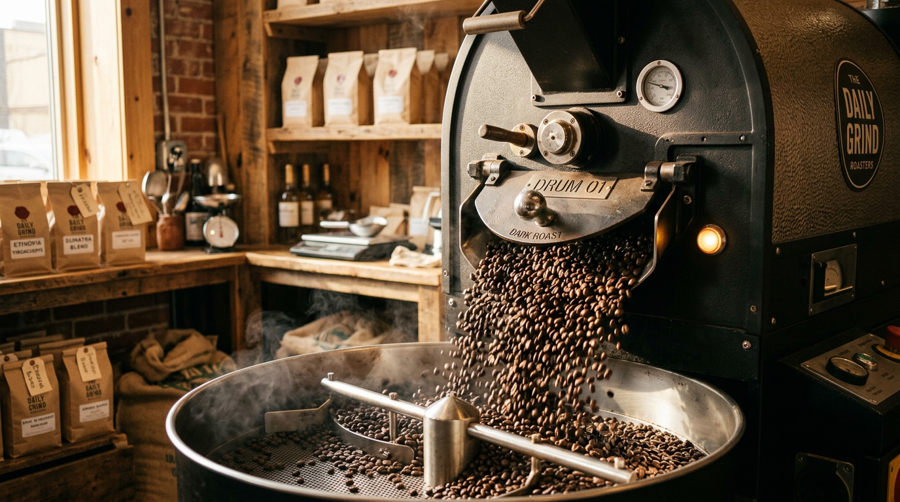
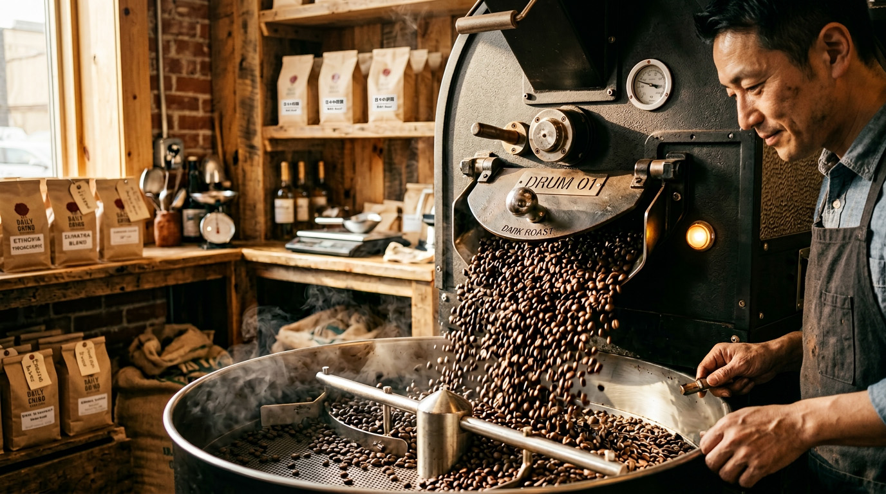
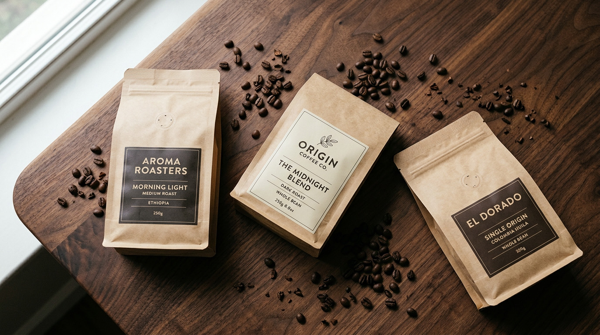
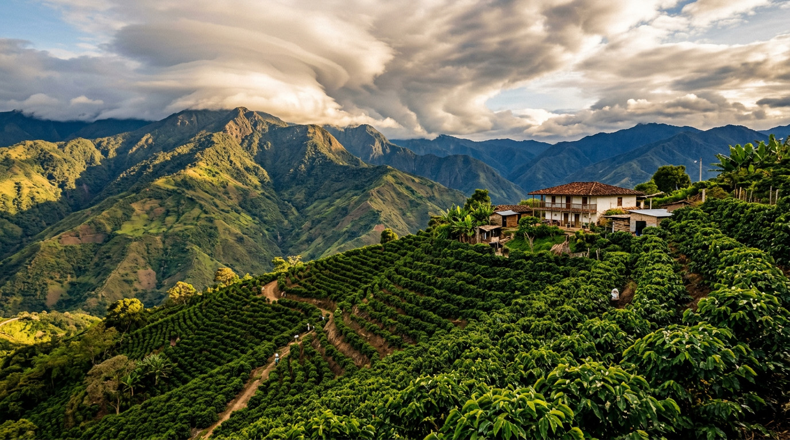
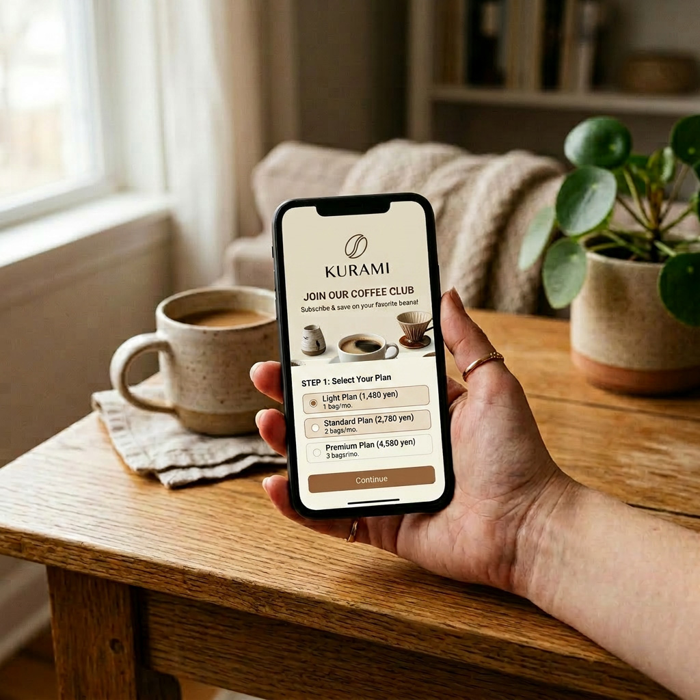
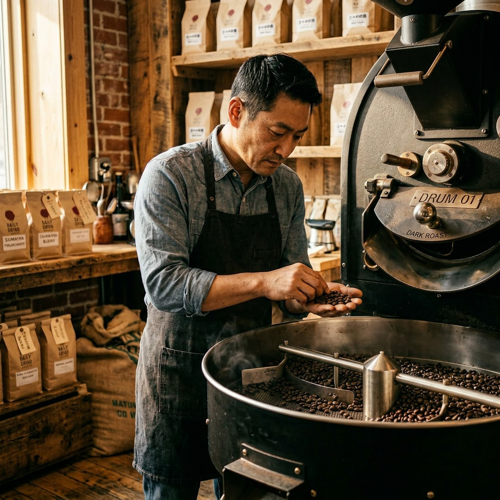
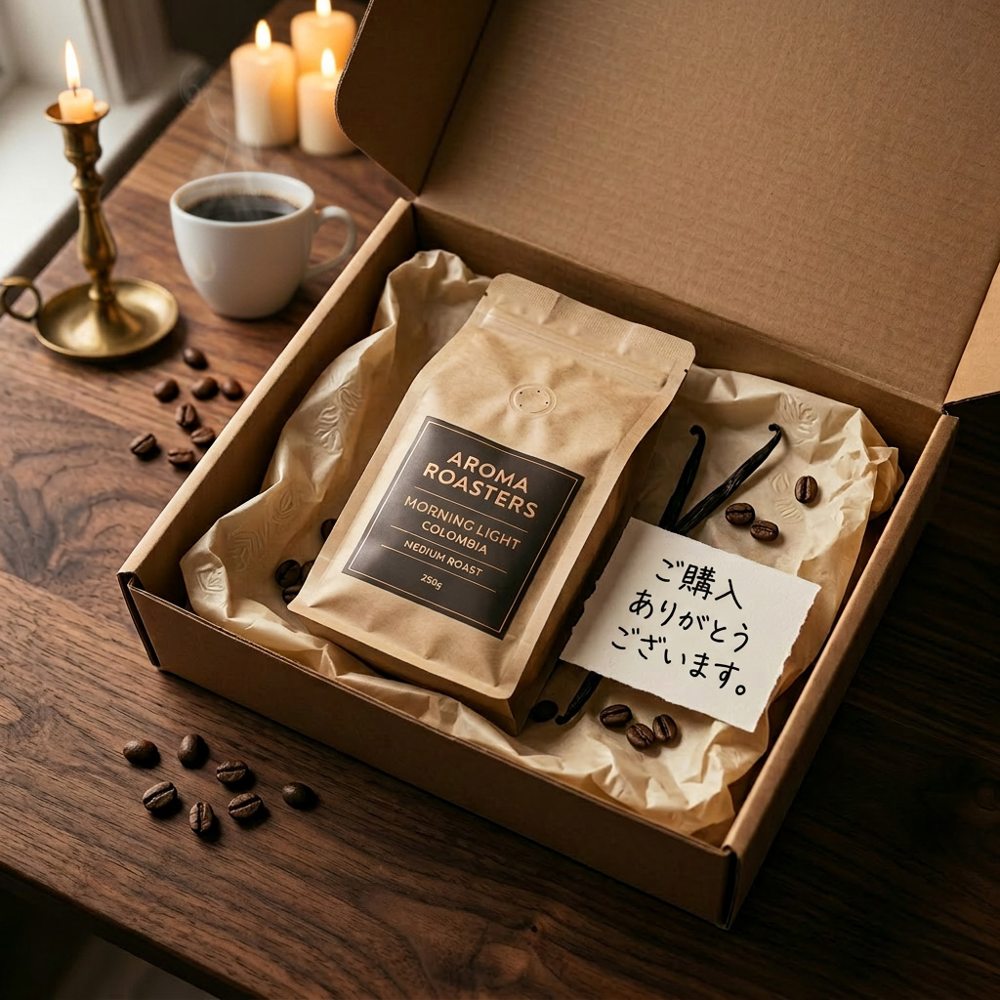
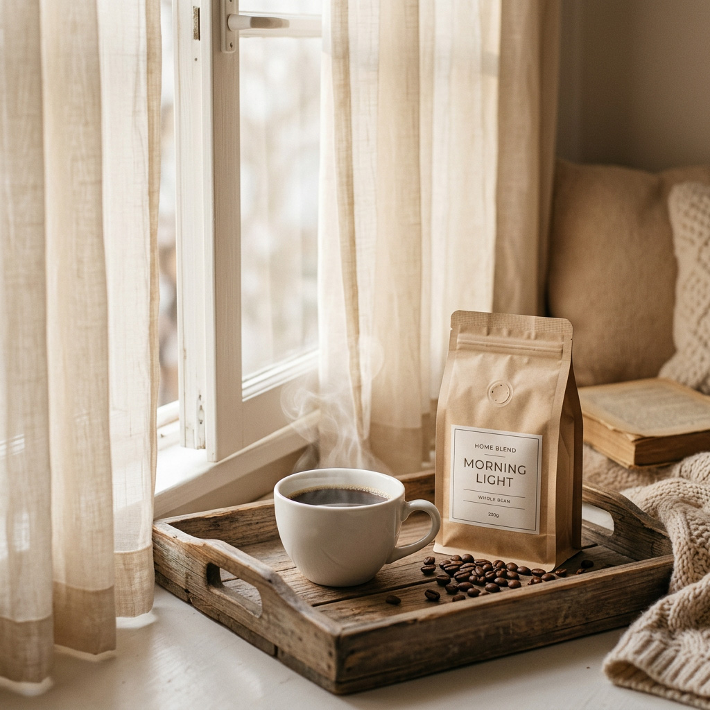

01
産地直送
農園から直送。
信頼できる現地パートナーと長期契約。中間流通を最小限に、品質と生産者の暮らしの両方を守ります。
焙煎士が選ぶスペシャルティコーヒー豆を、
焙煎したてのままご自宅へ。
豆の種類も焙煎度も、あなたの好みに。
毎日のコーヒーを、もう少しだけ豊かに。
KURAMIが大切にしている4つのこだわりです。
信頼できる現地パートナーと長期契約。中間流通を最小限に、品質と生産者の暮らしの両方を守ります。

02注文を受けてから焙煎する受注ロースト。香りがもっとも華やぐタイミングで、ご自宅へお届けします。

03JCRC入賞経験を持つ焙煎士が、毎月の気候と産地のロットから「いま一番おいしい豆」をセレクト。

04同じ豆を単品購入するより、最大20%お得。送料無料・スキップ自由で、無理なく続けられます。
同じ「コーヒー」でも、土地によってこんなにも違う。
標高・土壌・精製方法が生む、4つの表情をご紹介します。
コーヒー発祥の地。華やかなジャスミンの香りと、ベリーのようなフルーティな酸味。紅茶を思わせる軽やかな後味は、朝の一杯にぴったりです。

バランス感の王道。やわらかな甘さと、ミルクチョコレートのようなコク。クリアな酸とまろやかな後味は、ミルクとの相性も抜群です。
火山灰土壌が育む、重厚で複雑な味わい。ダークチョコレートと熟したオレンジの香り。じっくり飲みたい休日の午後に。
ナッツとキャラメルの香ばしさ。穏やかな酸味と心地よい苦みは、毎日の定番にしたくなる安心感。エスプレッソやカフェオレにも。
ライフスタイルに合わせて選べる3プラン。
豆の種類・焙煎度はマイページからいつでも変更できます。
ひとり暮らし・週末派に
毎日の一杯を楽しむ方に
こだわり派・ご家族に
※ 価格は税込です。お届け頻度は2週間ごと／月1回／2ヶ月ごとから選択可能。スキップ・休止・解約はマイページからいつでも操作できます。
お申し込みから、一杯を楽しむまで。
シンプルな4ステップでお届けします。

プランと豆の好み、焙煎度を選んでお申し込み。3分で完了します。

ご注文ごとに、焙煎士がその月のベストロットを焙煎します。

焙煎から5日以内に出荷。ポスト投函で、不在でも受け取れます。

焙煎士の手紙と一緒に、世界の産地の一杯をどうぞ。
KURAMIで毎月のコーヒーを楽しんでいる、
お客様からのメッセージ。


はい、いつでも解約・休止・スキップが可能です。マイページから1分で操作できます。違約金や継続義務は一切ありません。
もちろん可能です。次回お届け予定日の5日前までに、マイページから変更してください。豆の量・お届け頻度の変更も同様です。
はい、お申し込み時に「豆のまま」「中挽き」「細挽き」など5段階からお選びいただけます。鮮度を保つため、豆のままを推奨しています。
クレジットカード（VISA / Mastercard / JCB / AMEX）、Apple Pay、Google Pay、Amazon Pay、コンビニ後払いに対応しています。
3ヶ月・6ヶ月のギフトプランをご用意しています。メッセージカードと焙煎士の手紙を添えてお届けします。詳しくはギフトページをご覧ください。
すべての配送はポスト投函対応のパッケージでお届けします。ご不在でもお受け取りいただけるので、忙しい方にも安心です。
初回50%OFF・送料無料・いつでも解約OK。
3分で、はじめての一杯までお申し込みいただけます。